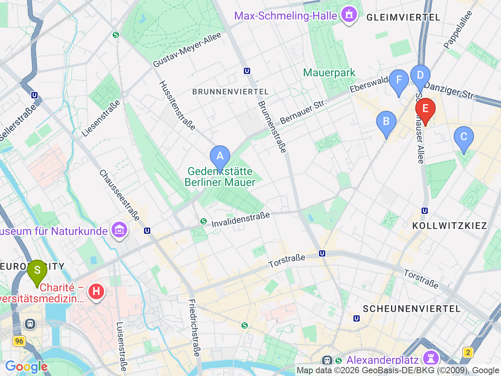
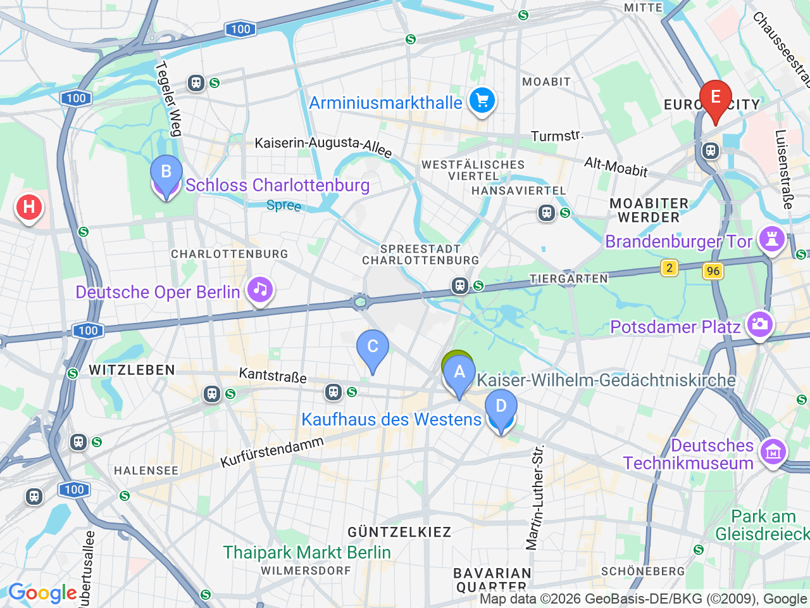

Day 20 · 2026-09-04（五）
德國・柏林/萊比錫/德勒斯登 Day 4/7
Prenzlauer Berg 文青散步 & 西柏林地標
上午柏林圍牆紀念園區與文青街區，下午轉戰選帝侯大街與夏洛滕堡宮
Prenzlauer Berg 景點區域

西柏林景點區域（含飯店）

彈性探索景點DAY 20
| 地點 | 地點 (英文) | 預計停留(分鐘) | 價格 | 備註 |
|---|---|---|---|---|
| 柏林圍牆紀念園區 | ABerlin Wall Memorial, Bernauer Straße, Berlin | 約60分鐘 | 免費 | 保存完整圍牆帶，歷史價值高 |
| Kastanienallee | BKastanienallee, Berlin | 約30分鐘 | 免費 | 文青店家聚集的林蔭大道 |
| Kollwitzplatz | CKollwitzplatz, Berlin | 約20分鐘 | 免費 | 社區廣場，可順道逛周邊小店 |
| Kulturbrauerei | DKulturbrauerei, Berlin | 約20分鐘 | 免費 | 舊釀酒廠改建的文創園區 |
| 午餐：Konnopke's Imbiss | FKonnopke's Imbiss, Berlin | 約20分鐘 | 見上方三餐資訊 | U2高架橋下老攤 |
| 威廉皇帝紀念教堂 | GKaiser Wilhelm Memorial Church, Berlin | 約20分鐘 | 免費 | 二戰轟炸後保留殘塔，柏林地標 |
| Ku'damm 逛街 | HKurfürstendamm, Berlin | 約45分鐘 | 柏林最著名購物大街 | |
| 夏洛滕堡宮外觀＋花園 | ICharlottenburg Palace, Berlin | 約45分鐘 | 花園免費（宮內另計門票） | 普魯士王室夏宮，外觀＋花園免費參觀 |
| 晚餐：Dicke Wirtin | JDicke Wirtin, Berlin | 約90分鐘 | 見上方三餐資訊 | Savignyplatz 德式小酒館 |
每日三餐
午餐
Konnopke's ImbissKonnopke's Imbiss約 €5-8／人
📍 Schönhauser Allee 44a, BerlinU2高架橋下老攤咖哩腸；備案 Prater Garten（柏林最老啤酒花園，Kastanienallee 7-9）
晚餐
Dicke WirtinDicke Wirtin約 €15-25／人
📍 Carmerstraße 9, BerlinSavignyplatz 德式小酒館；備案 KaDeWe 6樓美食街（Tauentzienstraße 21-24，教堂旁）
住宿資訊
ibis Berlin Hauptbahnhof
📍 Invalidenstraße 53, 10557 Berlin